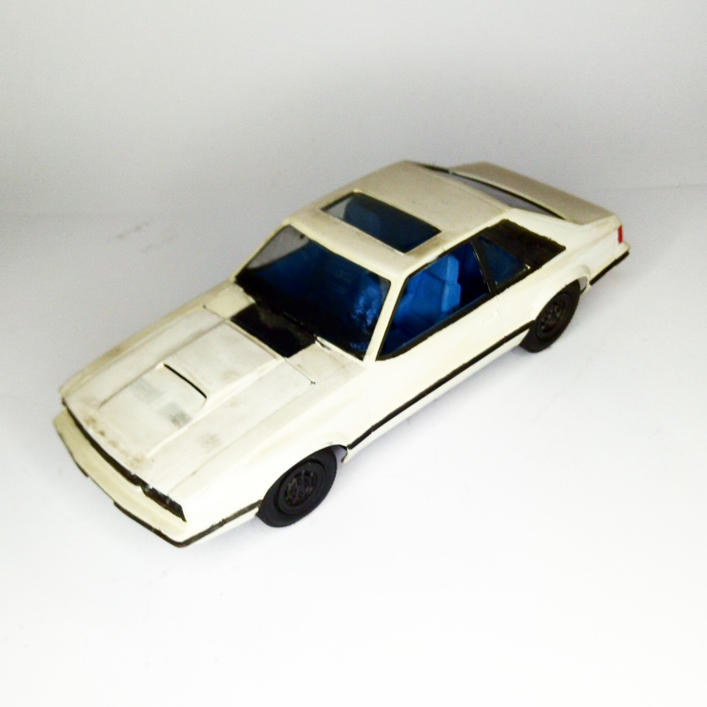

Auto e veicoli stradali · scale model archive
Ford Mustang GT
Ford Mustang GT — Kit: MPC, Scale: 1/25. Model year 1986, I drive that car model #1/24 #MPC

Photo gallery
English description
Model year 1986, I drive that car model
#1/24 #MPC
Descrizione italiana
Anno modellolo 1986, I drive che auto modello.